Your AI agent reads the whole internet.
What if part of it is lying to it?
taintline follows untrusted text through everything your agent does and checks it before anything sensitive runs. Use it to investigate what went wrong — or to stop it from going wrong at all.

Sit back for nine seconds — it loops. That's the whole idea in one picture.
Here's the trick
Most tools read an incoming message and guess "does this look dangerous?" taintline asks a sharper question: "did the dangerous thing actually happen?"
Something untrusted arrives
A web page, an email, a file, a tool result. taintline marks it as "not ours" the moment it enters.
It follows the trail
As the agent reasons and acts, taintline tracks where that text goes — even into the agent's long-term memory, days later.
It checks at the door
Before any sensitive action — sending, running, writing, cloud calls — it asks: is untrusted input steering this? And is real data about to leave?
It builds the case
Every finding comes with the exact chain of events, tamper-proof hashes, and mappings to MITRE ATLAS, ATT&CK, OWASP and NIST.
A page that merely mentions secrets? Nothing happens. A page that talks the agent into sending one out? That's the moment taintline lights up. Quiet during real work, loud when it counts.
See it catch one
Fake an attack, then investigate it. No setup, nothing real touched.
pip install -e .
taintline simulate --scenario indirect_exfil --out demo.jsonl # fake an attack
taintline analyze demo.jsonl # investigate it
Three ways to use it
One engine, whether you're cleaning up after an incident or trying to prevent the next one.
🔎 Analyze
Something went sideways. Reconstruct exactly what happened, with evidence you can hand to anyone.
taintline analyze trace.jsonl \ --out report/ --dashboard
🛡️ Guard
Don't let it go sideways. Check every tool call live and block the bad ones — no changes to your agent.
taintline guard mcp-proxy \ -- your-mcp-server
📡 Pipeline
Wire it into CI or your SIEM. Fail a build if an agent trace leaks something.
taintline analyze traces.jsonl \ --fail-on high
The Guard is the one to show off. It runs each tool call through the taint engine first and decides — allow, log, ask a human, or block — in about a millisecond and a half. Drop it in front of any Model Context Protocol server and your agent is covered.
"Okay, but does it work?"
Fair question. It proves itself — and it's honest about the limits.
It even attacks its own detections with 66 disguised variants. The result it'll tell you straight: a single clever trick can slip past the keyword layer — but the behaviour layer and the guard still stop every one. That's defense in depth you can measure.
What it catches
The real playbook against AI agents, including the disguised versions.
Every finding maps to MITRE ATLAS, MITRE ATT&CK, the OWASP LLM Top 10 and NIST AI RMF — the language your security team already speaks.